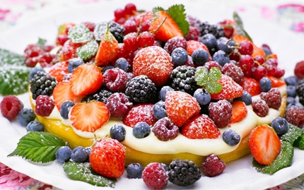

Recept på bärtårta

Grym bärtårta som är mjuk, krämig och så är den fylld med choklad.
Ingredienser
- 300g mandelmassa
- 3 ägg
- 1 / 2 dl vetemjöl
Fyllning
- 1 dl vaniljvisp
- 1 / 2 dl kvarg vanilj
- 1 liter blandade färska bär
Gör så här
Sätt ugnen på 175°. Riv mandelmassan och rör i ägg och mjöl.
Häll smeten i en smord och bröad form, ca 24 cm i diameter.
Grädda i mitten av ugnen ca 20 min. Låt kakan kallna.
Vispa vaniljvispen och rör i kvarg.
Bred ut fyllningen över kakan. Lägg på bären och dekorera